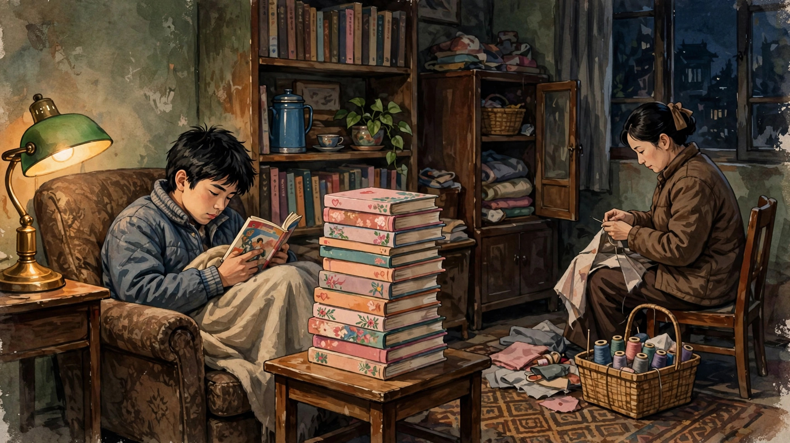

也许她的言情小说不是最好的，但她对古诗词的运用可谓登峰造极
欢迎点击上方名片关注我的公众号，您的支持是我持续原创的最大动力。
（这是去年琼瑶轻生离世后我写的一篇原创文章，稍有增删。）
过去的一周，相继传来两位名人离世的消息。一位是刘家昌，资深音乐人(曾培养凤飞飞、邓丽君、费玉清等一批知名歌手。补充：前几天刚刚去世的千百惠，也是刘家昌的弟子)，因病去世，另一位是大众更为熟悉的言情作家琼瑶，在家自杀离世，终年86岁。这两位其实有一些交集，琼瑶的一些影视剧中的主题曲就是刘家昌的作品。 其中我最熟悉的是《彩云飞》的主题歌《我怎能离开你》，这一首作品串起了三位离世的艺人：演唱者邓丽君，词作者琼瑶，曲作者刘家昌。 此时再听这首歌，令人唏嘘。
初次接触琼瑶时我还在青少年时期（具体几岁不记得了）。只记得看她的第一本书名叫《彩霞满天》，当时就觉得这书名好美。看完后，青春朦懂的我有种脸红心跳的感觉。毕竟第一次看到这么直白描写男女情爱的作品，想想我是七零年代生人就好理解了。毕竟在我的成长过程中，看到的不是革命文学就是伤痕文学。琼瑶的写作方式给我打开了一个全新的文学世界。

这里先插一个题外话。我在青年时代看琼谣作品居然远多于金庸作品。估计很多人听到这个会觉得不可思议：你一个男生，在青春躁动的年代只看琼瑶而不看金庸？你怕不是有gay的倾向吧？我来解释一下，这恐怕和我的家庭成长环境不无关系。我小时候，爸爸经常出外做生意，一年到头在家的日子屈指可数。所以在文学品味上我受妈妈影响更多。妈妈年经时是文艺青年（虽然因为文革学历不高），喜爱阅读，龙其是言情小说，就是她把我带入了琼瑶的世界。而金庸的作品我接触的较少，还是通过 TVB版《射雕》第一次了解他的作品。当时的确找来《射雕》原著看了看，觉得确实写得精彩，难怪电视到那么受欢迎。但不知怎的，后来就没想到找来金庸的其他作品看看。直到工作多年后（也就是前些年），才利用闲暇看完了他的十四部经典小说。
回到琼瑶。她去世的消息传来后，网上对她有许多负面的评价（这和金老爷子世时一面倒的好评形成鲜明对比)。主要是关于她的“小三”身份和她后期一些作品的“雷人”价值观。对于前者，我不以为然，因为我一向不太关注写作者的私德（极度残忍，反人类反社会的除外），而更关注其作品的价值。至于后者，我部分同意。对此琼瑶的早期和晚期作品，甚至感觉不是同一个人写的。她的早期作品，感情描写纯真美好，文笔优雅，结合古典诗词的熟练运用，更有一种含蓄唯美的意境。 晚期作品明显更加热情奔放，甚至激情四射。但有些用力过头，甚至出现了价值观问题。最雷人的莫过于那句“你不过失去了一条腿，依萍失去的可是爱情!”
最后简单谈谈我对琼谣的看法。首先，我对她的私德不予评价，也不关心。关于这一点，钱钟书是我的嘴替：我喜欢吃鸡蛋，就一定要去认识生蛋的母鸡吗?其次，我个人认为，琼瑶的作品虽与金庸一样属于通俗文学的范畴，但还是有其文学价值的。就我个人而言，琼瑶作品是我古诗词的启蒙。古诗词对普通人而言还是有比较高的门槛的。琼瑶通过在其作品（包括标题、内容和改编影视剧歌词）中娴熟地运用古诗词，为其人物和情节描写增色不少。通过这些古诗词的贴切运用，我自然也读懂了很多以前让我一头雾水的词句，领略到古诗词的韵律和意境之美。 举例而言，心有千千结、雁儿在林梢、庭院深深这些都是很美的诗句，用于标题，令人回味无穷。第三，琼瑶的后期作品（以《还珠格格》系列为代表），虽然在影视改编上取得了巨大成功，甚至一度“霸屏”寒暑期电视档，但在品味、格调甚至价值观上远不如其早期作品。人物描写模式化、简单化，千人一面；台词也如白开水寡淡无味，其中有些甚至还体现了扭曲的价值观（如前面引用的雷人台词)。至于谬误百出的所谓历史爱情剧，就更无价值，甚至误导大众了。
总的说来，对于喜爱阅读写作的人，我还是推荐琼瑶的早期作品。在言情小说领域，琼瑶的作品还是很有代表性的，也具有一定的文字价值。
最后补充一篇歌词解析，让大家感受一下琼瑶运用古诗词的功底。（资料来源于网络未经考证）
（建议边听歌边看歌词）
《情深深雨濛濛》
情深深 雨濛濛 多少楼台烟雨中 （杜牧《江南春》：南朝四百八十寺，多少楼台烟雨中）
记得当初 你侬我侬（管道升《我侬词》：尔侬我侬，忒煞情多，情多处，热似火）
车如流水马如龙 （李煜《望江南（多少恨）》：车如流水马如龙，花月正春风）
尽管狂风平地起（白居易《登高》：纵有狂风拔地起，我亦乘风破万里）
美人如玉剑如虹 （龚自珍《夜坐二首》：万一禅关砉然破，美人如玉剑如虹）
啊 情深深 雨濛濛（欧阳修《乌夜啼》：烟雨濛濛如画，轻风吹旋收）
世界只在你眼中
相逢不晚为何匆匆 （苏轼《江城子》：天涯流落思无穷，既相逢，却匆匆）
山山水水几万重 （李商隐《无题·来是空言去绝踪》：刘郎已恨蓬山远，更隔蓬山几万重）
一曲高歌千行泪 （杜甫《元日示宗武》：不见江东弟，高歌泪数行）
情在回肠荡气中 （龚自珍《夜坐二首》：功高拜将成仙外，才尽回肠荡气中）
啊 情深深 雨濛濛
天也无尽地无穷 （晏殊《木兰花》：天涯海角有穷时，只有相思无尽处）
高楼望断情有独钟 （晏殊《蝶恋花》：昨夜西风凋碧树，独上高楼，望尽天涯路）
盼过春夏和秋冬
盼来盼去盼不尽
天涯何处是归鸿 （苏轼《次韵法芝举旧诗》：春来何处不归鸿，非复䊨牛踏旧踪）